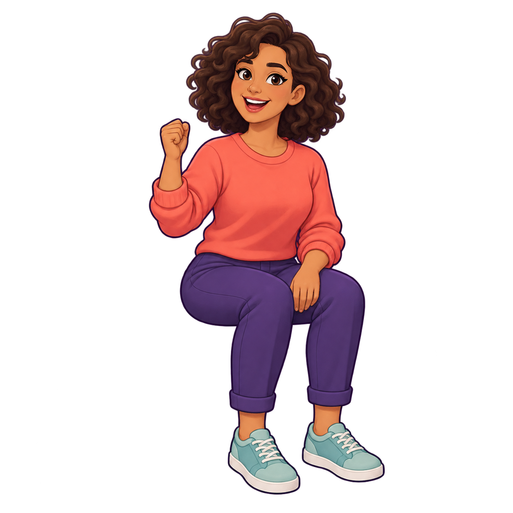
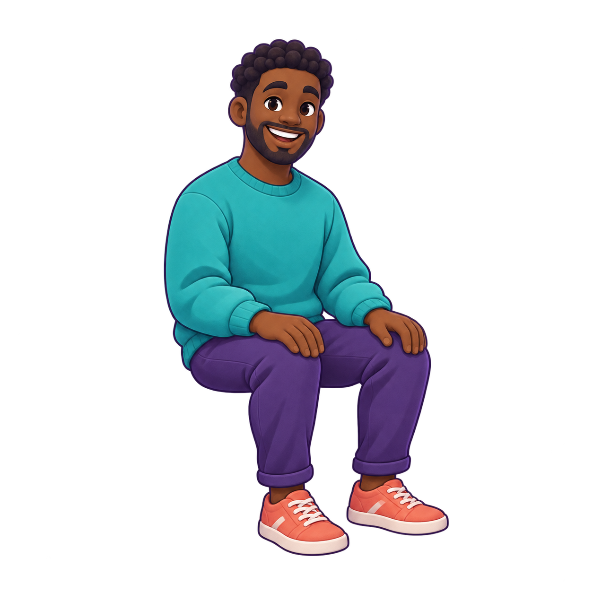
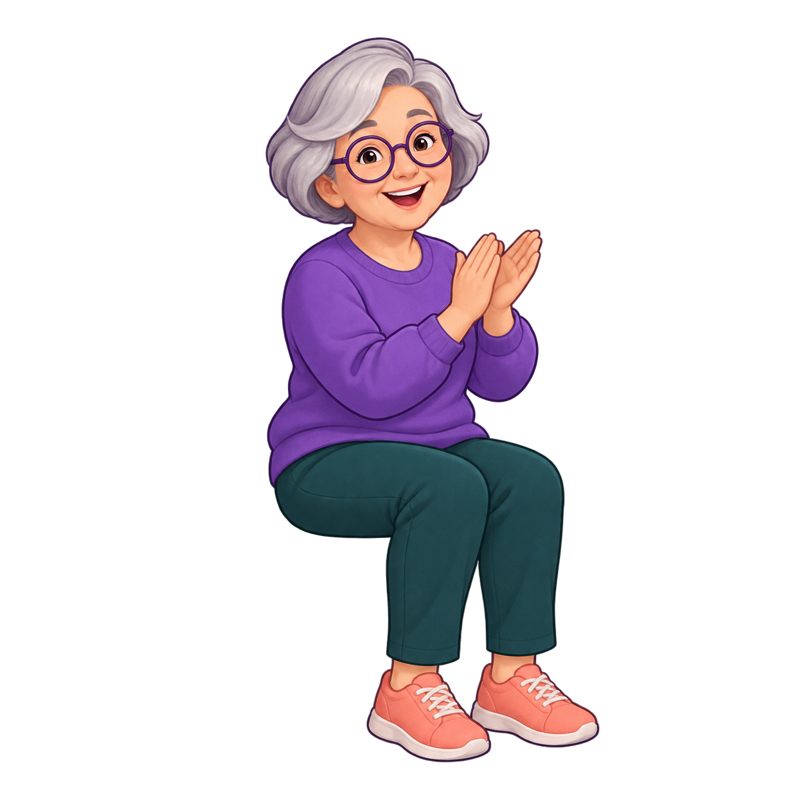
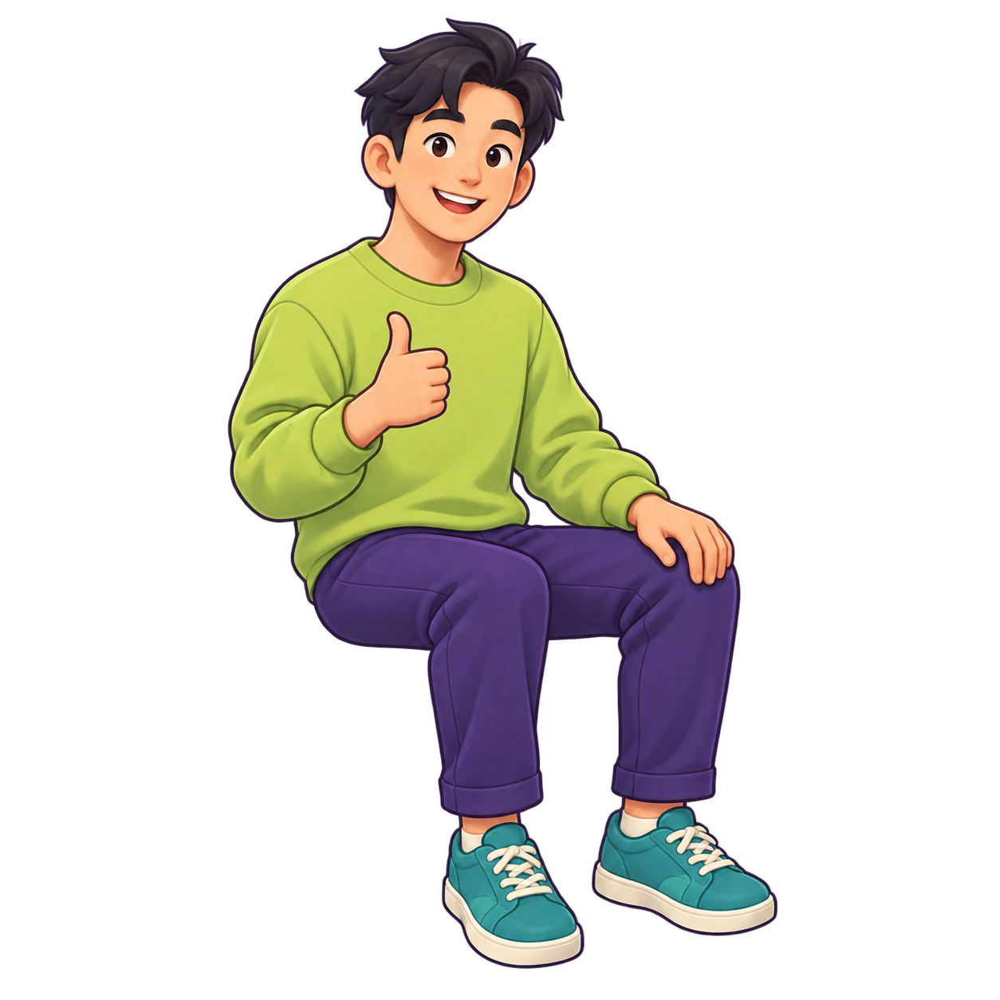
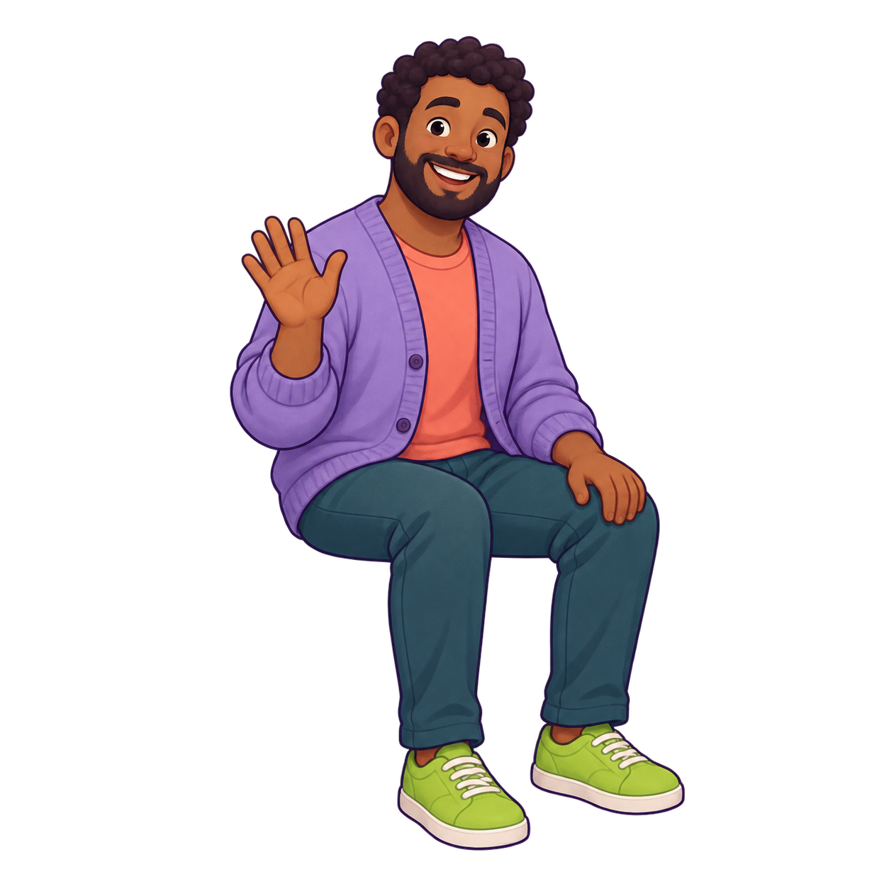

01 · coral

Hip UV: 0.455, 0.612
Original alpha preserved. Front three-quarter anatomy; all sprites have a square source plane. Yaw-only billboards rotate around their hip anchor. This is an asset scale reference; camera, chairs and scene occlusion require integration proof.

Hip UV: 0.455, 0.612

Hip UV: 0.428, 0.634

Hip UV: 0.445, 0.644

Hip UV: 0.419, 0.626

Hip UV: 0.425, 0.622
Single chair proposal: matte violet rounded bucket/back + seat cushion, dark slim rounded legs; one repeated module, no random cubes. Do not flatten source aspect or use texture centre as seat pivot.